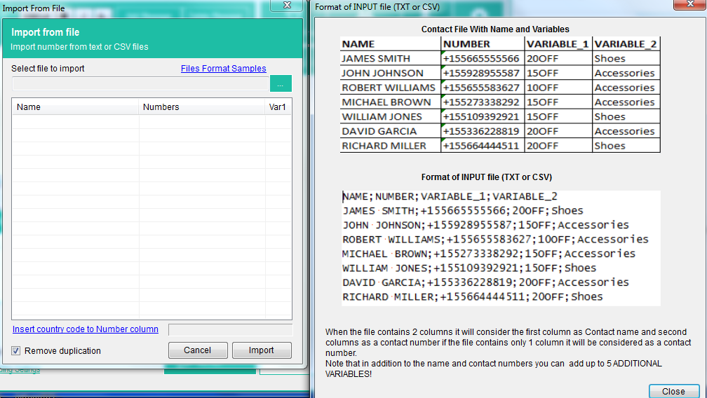

WHATSENDER é um software livre projetado para enviar mensagens em massa WhatsApp diretamente do PC de uma forma simples e eficaz.
WhatSender usa a tecnologia WhatsApp Web, mas acrescenta recursos úteis para fazer WhatsApp Marketing e enviar mensagens WhatsApp para vários usuários ao mesmo tempo. Aqui estão as razões pelas quais você deve usar Whatsender para entrar em contato com todos os seus amigos/parentes ou potenciais clientes para fazer marketing WhatsApp em um nível profissional:
- Criar e enviar mensagens personalizadas (com o nome do destinatário) diretamente do seu PC
- Importar contatos manualmente ou de arquivo (CSV ou TXT)
- Enviar mensagens WhatsApp para contatos, mesmo se eles não são salvos em seu livro de endereços
- Criar automaticamente várias variações da mensagem para enviar a todos os contatos e evitar spam ou proibição
- Multi-Account: envie mensagens WhatsApp com várias contas (as mensagens serão enviadas em “rotação”)
- Capacidade de ver o relatório da campanha (a partir da seção LOG)
- Possibilidade de agendar o envio e definir um atraso entre as mensagens para evitar a ser banido (Leia também esta dicas)
- Pegue todos os membros de um grupo do WhatsApp para contatá-los via WhatSender
- Crie e envie mensagens do WhatsApp com fotos e vídeos virais
- Verificação em massa de números de telefone WhatsApp e não-WhatsApp (recurso de filtro de números)
Baixe e instale a versão gratuita do WhatSender a partir do seguinte link:
Nota: a versão gratuita do WhatSender permite-lhe enviar mensagens ilimitadas. A única limitação é a incapacidade de importar contatos de arquivos ou de copiá-los e colá-los no modo batch.
Esta ferramenta permite que você se comunique com os destinatários que esperam receber suas mensagens (eg. Cliients, estudantes, pacientes, etc.), e não é uma ferramenta do spam, assim que nós não somos responsáveis se você começ proibido
Imediatamente após a instalação, você verá a seguinte tela principal:

Selecione o idioma desejado (árabe, inglês, Espanola, francais, portugues, italiano) clicando no menu Tools e, em seguida, Language, como mostrado na imagem abaixo:

Guia
COMO ENVIAR MENSAGENS WHATSAPP EM MASSA DO PC
PASSO 1. Importar ou adicionar seus contatos
Clique no canto superior esquerdo do IMPORT para importar todos os seus contatos (destinatários da mensagem que você deseja enviar). Você tem dois maneira de adicionar seus contatos (importação de arquivo ou importação manual)

Se você clicar em “importar do arquivo”, ele abrirá uma nova janela onde você pode selecionar e importar contatos do arquivo CSV ou TXT. Nesses arquivos, você pode ter uma coluna com o número de telefone ou duas colunas com nome e número (por exemplo. Nome, número).

Se você importar contatos com nome e números, será possível criar mensagens personalizadas com a variável do nome nas mensagens.
Se você clicar em importação manual ele abrirá uma janela onde você pode adicionar manualmente seus contatos e digite o nome e número de celular (ou números móveis apenas).

Nota: na versão gratuita você terá permissão para importar contatos manualmente apenas e a opção “copiar e colar” está desativada.
Uma vez que você adicionar contatos clique em IMPORT.
PASSO 2. Criar a mensagem para enviar
Agora você pode começar a digitar a mensagem para enviar para seus contatos (a partir da seção central do programa).

Você será capaz de criar também diferentes variantes da mensagem para que seus contatos não recebem o mesmo texto (isso evita spam e evita ser banido no WhatsApp). Basta clicar no botão “Adicionar mensagem” para criar uma nova versão para a mensagem.

Abaixo da janela de mensagem há um link para adicionar Emoji e há links para adicionar automaticamente o nome “variáveis” na mensagem.

Você também pode selecionar um arquivo para anexar (foto, imagens ou arquivo de vídeo) e enviar com a mensagem.

PASSO 3. Enviar a mensagem
Quando todos os contatos são carregados e a mensagem está pronta, apenas estale sobre emite a tecla abaixo.

Depois de clicar em SEND, você poderá enviar mensagens de uma nova conta do whatsapp, de uma em particular, ou enviar mensagens rotativas usando todas as contas do whatsapp armazenadas no programa.

Quando solicitado com um código QR, use o scanner QR dentro do WhatsApp para digitalizar o código QR. Para fazer isso, abra o WhatsApp no seu telefone e:
> No Android: na tela de conversas > menu > WhatsApp Web.
> No iPhone: Vá para configurações > WhatsApp Web.
> No Windows Phone: Vá para menu > WhatsApp Web
Assim, digitalizar o código QR na tela do seu computador a partir do seu telefone. Logo depois, a mensagem do WhatsApp será enviada para todos os destinatários!
Outros recursos/configurações
WhatSender tem uma interface de usuário muito simples e intuitiva, onde todas as ferramentas estão ao seu alcance:

Além das funções básicas já analisadas, como a importação de contatos e a criação de uma mensagem personalizada, existem outros recursos e configurações avançadas interessantes no programa.
GERAR números: se você clicar em importações–> gerar números você será capaz de criar números de celular para tentar chegar. Você terá que definir um “número inicial” e uma “contagem”: o programa irá gerar todos os números como você pode ver a partir da imagem abaixo.

CONTACT GRABBER: este recurso permitirá que você pegue todos os contatos de um grupo WhatsApp selecionado. Basta abrir o WhatsApp, escanear o código QR do seu telefone, selecionar o grupo e o WhatSender extrairá todos os contatos. Todos os contatos serão alistados na janela do “Grabber contato” como você pode ver da imagem abaixo.

CONFIGURAÇÕES: se você clicar em “configurações avançadas de envio” no botão “configurações”, ele abrirá uma janela onde você encontrará a opção de envio avançada que inicia a caixa de diálogo após a quantidade de mensagens “x” para evitar o bloqueio. Você só tem que definir suas contas WhatsApp familiares e algum dicionário de mensagens (mensagem aleatória que será enviada para suas contas familiares).

NUMBERS FILTER: este recurso permitirá que você saiba, dada uma lista de números de telefone, aqueles que estão associados com uma conta WhatsApp e aqueles que não são WhatsApp. Uma vez que a função está aberta, você deve carregar todos os números de telefone (ou usar a função de geração de números) e, em seguida, clique em Iniciar filtragem

O software irá verificar todos os números para saber que são “WhatsApp” e “NonWhatsapp” contas.
VÍDEO TUTORIAL
#4. Outras dicas
Se você estiver usando WhatSender para enviar um monte de mensagens e você quer proteger sua conta WhatsApp nós damos os seguintes conselhos: